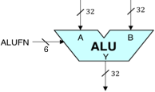
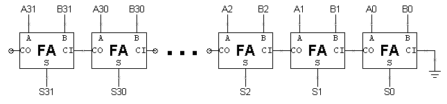

Lab 4: 32-bit ALU
When entering numeric values in the answer fields, you can use integers (1000, 0x3E8, 0b1111101000), floating-point numbers (1000.0), scientific notation (1e3), engineering scale factors (1K), or numeric expressions (3*300 + 100).
Useful links:
Problem 1. Design Problem: 32-bit Arithmetic and Logic Unit
See the instructions below.
Use the Jade instance below to enter your design. To complete this design problem, select the /alu/alu module and click in the Jade toolbar and the built-in tester will either report any discrepencies between the expected and actual outputs, or, if your design is correct, it will record the test passed.
In this lab, weʼll build the arithmetic and logic unit (ALU) for the Beta processor. The ALU has two 32-bit inputs (which weʼll call "A" and "B") and produces one 32-bit output. Weʼll start by designing each piece of the ALU as a separate circuit, each producing its own 32-bit output. Then weʼll combine these outputs into a single ALU result.
When designing circuitry there are three separate factors that can be optimized:
- design for maximum performance (minimum latency)
- design for minimum cost (minimum area)
- design for the best cost/performance ratio (minimize area*latency)
Happily itʼs often possible to do all three at once but in some portions of the circuit some sort of design tradeoff will need to be made. When designing your circuitry you should choose which of these three factors is most important to you and optimize your design accordingly.
The standard cell library & gate-level simulation
The building blocks for this lab come from a library of logic gates — IC manufacturers often have a "standard cell library" and various design tools to make it easier for their customers to design without worrying about the detailed geometry of the mask layers used to create mosfets and wiring. 6.004 has its own Standard Cell Library which provides:
2-, 3- and 4-input AND, OR, NAND and NOR gates
2-input XOR and XNOR gates
2:1 and 4:1 multiplexors
D-register and D-latches
See the library documentation for details on the appropriate connections for each gate. In Jade, the gates in the standard cell library can be found in the parts bin under "/gates/".
Since weʼre designing at the gate level we can use a faster simulator that only knows about gates and logic values (instead of transistors and voltages). Note that your design canʼt contain any mosfets, resistors, capacitors, etc.; the gate-level simulator only supports the gate primitives in the standard cell library.
Inputs are still specified in terms of voltages (to maintain netlist compatability with the other simulators) but the gate-level simulator converts voltages into one of three possible logic values using the vil and vih thresholds specified at the beginning of your design file:
1 logic high (voltages greater than or equal to vih threshold)
X unknown or undefined (voltages between the thresholds, or unknown voltages)
A fourth value "Z" is used to represent the value of nodes that arenʼt being driven by any gate output (e.g., the outputs of tristate drivers that arenʼt enabled). The following diagram shows how these values appear on the waveform display:

ALU specification
 The 32-bit ALU we will build will be a component in the Beta processor we will address in subsequent laboratories. The logic symbol for our ALU is shown to the right. It is a combinational circuit taking two 32-bit data words A and B as inputs, and producing a 32-bit output Y by performing a specified arithmetic or logical function on the A and B inputs. The particular function to be performed is specified by a 6-bit control input, FN, whose value encodes the function according to the following table:
| FN[5:0] | Operation | Output value Y[31:0] |
|---|---|---|
| 00-011 | CMPEQ | Y = (A == B) |
| 00-101 | CMPLT | Y = (A < B) |
| 00-111 | CMPLE | Y = (A ≤ B) |
| 01---0 | 32-bit ADD | Y = A + B |
| 01---1 | 32-bit SUBTRACT | Y = A - B |
| 10abcd | Bit-wise Boolean | Y[i] = Fabcd(A[i],B[i]) |
| 11--00 | Logical Shift left (SHL) | Y = A << B |
| 11--01 | Logical Shift right (SHR) | Y = A >> B |
| 11--11 | Arithmetic Shift right (SRA) | Y = A >> B (sign extended) |
Note that by specifying an appropriate value for the 6-bit FN input, the ALU can perform a variety of arithmetic operations, comparisons, shifts, and bitwise Boolean combinations required by our Beta processor.
| Bi | Ai | Yi |
| 0 | 0 | d |
| 0 | 1 | c |
| 1 | 0 | b |
| 1 | 1 | a |
The three compare operations each produce a Boolean output. In these cases, Y[31:1] are all zero, and the low-order bit Y[0] is a 0 or 1 reflecting the outcome of the comparison between the 32-bit A and B operands.
We can approach the ALU design by breaking it down into subsystems devoted to arithmetic, comparison, Boolean, and shift operations as shown below:

Designing a complex system like an ALU is best done in stages, allowing individual subsystems to be designed and debugged one at a time. The steps below follow that approach to implementing the ALU block diagram shown above. We begin by implementing an ALU framework with dummy modules for each of the four major subsystems (BOOL, ARITH, CMP, and SHIFT); we then implement and debug real working versions of each subsystem. To help you follow this path, we provide separate tests for each of the four component modules.
NOTE: the FN signals used to control the operation of the ALU circuitry use an encoding chosen to make the design of the ALU circuitry simple. This encoding is not the same as the one used to encode the 6-bit opcode field of Beta instructions. In Lab 7, youʼll build some logic (actually a ROM) that will translate the opcode field of an instruction into the appropriate FN control bits.
There are design notes below suggesting how to go about the design for each of the sub-modules.
BOOL unit
Design the circuitry to implement the Boolean operations for your ALU and use it to replace the jumper and wire that connects the Y[31:0] output to ground.

The suggested implementation uses 32 copies of a 4-to-1 multiplexor (mux4) where BFN[3:0] encode the operation to be performed and A[31:0] and B[31:0] are hooked to the multiplexorʼs select inputs. This implementation can produce any of the 16 2-input Boolean functions.
Hint: Jade will automatically replicate a logic gate to match the width of the gateʼs inputs and outputs to the width of the signals that connect to the gate.
For example, the MUX4 gate shown above has a 1-bit output signal, which in this schematic is hooked to Y[31:0], a signal of width 32. So Jade will replicate the MUX4 32 times, the output of the first MUX4 connects to Y[31], the output of the second MUX4 connects to Y[30], and so on.
The input signals are then replicated (if necessary) to provide the inputs for each of the 32 MUX4 gates.
Each MUX4 gate requires 2 select signals, which are taken from the 64 signals provided. B[31] and A[31] connect to the select lines of the first MUX4, B[30] and A[30] connect to the select lines of the second MUX4, and so on.
Each MUX4 gate requires 4 data signals. The specified BFN inputs are only 1 bit wide, so the specified signals are each replicated 32 times, e.g., BFN[0] is used as the D0 input for each of the 32 MUX4s.
The following table shows the encodings for some of the BFN[3:0] control signals used by the test jig (and in our typical Beta implementations):
| Operation | BFN[3:0] |
|---|---|
| AND | 1000 |
| OR | 1110 |
| XOR | 0110 |
| "A" | 1010 |
The BOOL test actually checks all 16 boolean operations on a selection of arguments, and will report any errors that it finds.
When your BOOL circuitry has been entered, run the test by clicking the green checkmark; a simulation plot window showing the inputs and outputs should appear. Jade will check your circuitʼs results against a list of expected values and report any discrepancies it finds.
Hint: What do I do when the verification fails?
The failure notification will tell you which signal failed verification and the simulated time at which the mismatch between the actual value and expected occurred. The tests are actually a sequence of 100ns testing cycles and the reported time will be at the end of one of the cycles when the output values are checked for correctness.
Move your mouse over the plot of the appropriate signal waveform until the vertical time cursor is approximately at the failure time. Then double-click to zoom in on the plots around that particular time; zoom in enough so that all the signals for that testing cycle are readable. Now you can figure out what the circuit was being asked to do for that particular test and, hopefully, deduce why your circuit is producing an incorrect output.
ARITH unit
Design an adder/subtractor (ARITH) unit that operates on 32-bit twoʼs complement inputs and generates a 32-bit output. It will be useful to generate three other output signals to be used by the CMP unit: Z which is true when the S outputs are all zero, V which is true when the addition operation overflows (i.e., the result is too large to be represented in 32 bits), and N which is true when the sum is negative (i.e., S[31] = 1). Overflow can never occur when the two operands to the addition have different signs; if the two operands have the same sign, then overflow can be detected if the sign of the result differs from the sign of the operands:
Note that this equation uses XB[31], which is the high-order bit of the B operand to the adder itself (i.e., after the XOR gate — see the schematic below). XA[31] is simply A[31].
The following schematic is one suggestion for how to go about the design:

AFN will be set to 0 for an ADD (\(S = A+B\)) and 1 for a SUBTRACT (\(S = A-B\)); A[31:0] and B[31:0] are the 32-bit twoʼs complement input operands; S[31:0] is the 32-bit result; Z/V/N are the three condition code bits described above. Weʼll be using the "little-endian" bit numbering convention where bit 31 is the most-significant bit and bit 0 is the least-significant bit.
Weʼve provided a FA module for entering the gate-level schematic for the full adder (see Problem 8 of Lab #1) to be used in constructing the 32-bit ripple carry adder that forms the heart of the ARITH unit.
The AFN input signal selects whether the operation is an ADD or SUBTRACT. To do a SUBTRACT, the circuit first computes the twoʼs complement negation of the B operand by inverting B and then adding one (which can be done by forcing the carry-in of the 32-bit add to be 1). Start by implementing the 32-bit add using a ripple-carry architecture (youʼll get to improve on this later on in the course). Youʼll have to construct the 32-input NOR gate required to compute Z using a tree of smaller fan-in gates (the parts library only has gates with up to 4 inputs).
When entering your circuitry, remember to delete the original jumpers and wires that connected the outputs to ground!
The module test tries adding and subtracting various operands, ensuring that the Z, V and N outputs are correct after each operation.
CMP unit
The ALU provides three comparison operations for the A and B operands. We can use the adder unit designed above to compute \(A-B\) and then look at the result (actually just the Z, V and N condition codes) to determine if A=B, A < B or A ≤ B. The compare operations generate a 32-bit result using the number 0 to represent false and the number 1 to represent true.
Design a 32-bit compare (CMP) unit that generates one of two constants (0 or 1) depending on the CFN[1:0] control signals (used to select the comparison to be performed) and the Z, V, and N outputs of the adder/subtractor unit. Clearly the high order 31 bits of the output are always zero. The least significant bit (LSB) of the output is determined by the comparison being performed and the results of the subtraction carried out by the adder/subtractor:
| Comparison | Equation for LSB | CFN[1:0] |
|---|---|---|
| A = B | LSB = \(Z\) | 01 |
| A < B | LSB = \(N \oplus V\) | 10 |
| A ≤ B | LSB = \(Z + (N \oplus V)\) | 11 |
At the level of the ALU module, FN[2:1] are used to control the compare unit since we need to use FN[0] to control the adder/subtractor unit to force a subtract.
Performance note: the Z, V and N inputs to this circuit can only be calculated by the adder/subtractor unit after the 32-bit add is complete. This means they arrive quite late and then require further processing in this module, which in turn makes Y[0] show up very late in the game. You can speed things up considerably by thinking about the relative timing of Z, V and N and then designing your logic to minimize delay paths involving late-arriving signals.
The module test ensures that the correct answer is generated for all possible combinations of Z, V, N and CFN[1:0].
SHIFT unit
Design a 32-bit shifter that implements logical left shift (SHL), logical right shift (SHR) and arithmetic right shift (SRA) operations. The A operand supplies the data to be shifted and the low-order 5 bits of the B operand are used as the shift count (i.e., from 0 to 31 bits of shift). The desired operation will be encoded on SFN[1:0] as follows:
| Operation | SFN[1:0] |
|---|---|
| SHL (shift left) | 00 |
| SHR (shift right) | 01 |
| SRA (shift right with sign extension ) | 11 |
With this encoding, SFN[0] is 0 for a left shift and 1 for a right shift and SFN[1] controls the sign extension logic on right shift. For SHL and SHR, 0ʼs are shifted into the vacated bit positions. For SRA ("shift right arithmetic"), the vacated bit positions are all filled with A[31], the sign bit of the original data so that the result will be the same as dividing the original data by the appropriate power of 2.
The simplest implementation is to build two shifters — one for shifting left and one for shifting right — and then use a 2-way 32-bit multiplexer to select the appropriate answer as the moduleʼs output. Itʼs easy to build a shifter after noticing that a multi-bit shift can be accomplished by cascading shifts by various powers of 2. For example, a 13-bit shift can be implemented by a shift of 8, followed by a shift of 4, followed by a shift of 1. So the shifter is just a cascade of multiplexers each controlled by one bit of the shift count. The schematic below shows a possible implementation of the left shift logic; the right shift logic is similar with the slight added complication of having to shift in either 0 (i.e., "gnd") or A[31], depending on the value of SFN[1]. Another approach that saves gates is to use the left shift logic for both left and right shifts, but for right shifts, reverse the bits of the A operand on the way in and reverse the bits of the output on the way out.

The module test checks that all three types of shifts are working correctly.
Final tests
When youʼve completed the design of the four sub-modules, select the ALU module and run its test. This runs each of the test suites that youʼve used to debug the component subcircuits, so unless thereʼs some unforeseen interaction among your blocks youʼre likely to pass the test. When this test completes successfully, the system will mark your design as complete.
Problem 2. Testing the ALU
In this labʼs design problem (see above), youʼll be building a 32-bit arithmetic and logic unit (ALU) that performs arithmetic and logic operations on 32-bit operands, producing a 32-bit result. Youʼll use this circuit in the design of the Beta later this semester. You may want to work on the design problem first and come back to this problem.
The test for this lab verifies your ALU circuitry by applying 186 different sets of input values. This question explores how those values were chosen.
No designer I know thinks testing is fun — designing the circuit seems so much more interesting than making sure it works. But a buggy design isnʼt much fun either! Remember that a good engineer not only knows how to build good designs but also actually builds good designs, and that means testing the design to make sure it does what you say it does.
An obvious way to test a combinational circuit is to try all possible combinations of inputs, checking for the correct output values after applying each input combination. This type of exhaustive test proves correct operation by enumerating the truth table of the combinational device. This is a workable strategy for circuits with a few inputs but quickly becomes impractical for circuits with many inputs. By taking advantage of information about how the circuit is constructed we can greatly reduce the number of input combinations needed to test the circuit.
The ripple-carry adder architecture suggested in the Design Problem uses 32 copies of the full adder module to create a 32-bit adder. Each full adder has 3 inputs (A, B, CI) and two outputs (S, CO):
- A single test vector for the full adder consists of 3 input values (one each for A, B and CI) and 2 output values (S and CO). To run a test the input values from the current test vector are applied to the device under test and then the actual output values are compared against the expected values listed by the test vector. This process is repeated until all the test vectors have been used. Assuming we know nothing about the internal circuitry of the full adder, how many test vectors would we need to exhaustively test its functionality?
- Consider a 32-bit adder with 64 inputs (two 32-bit input operands, assume CIN is tied to ground as shown in the diagram below) and 32 outputs (the 32-bit result). Assume we donʼt know anything about the internal circuitry and so canʼt rule out the possibility that it might get the wrong answer for any particular combination of inputs. In other words, just because the adder got the correct answer for 2 + 3 doesnʼt allow us to draw any conclusions about what answer it would get for 2 + 7. If we could apply one test vector every 100ns, how long would it take to exhaustively test the adder?
-
Clearly, testing a 32-bit adder by trying all combinations of input values isnʼt a good plan! Shown below is a schematic for a 32-bit ripple-carry adder.
 Except for the carry-in from the bit to the right, each bit of the adder operates independently. We can use this observation to test the adder bit-by-bit and with a bit of thought we can actually run many of these tests in parallel. In this case the fact that the adder got the correct answer for 2 + 3 actually tells us a lot about the answer it will get for 2 + 7. Since the computation done by adder bits 0 and 1 is same in both cases, if the answer for 2 + 3 is correct, the low-order two bits of the answer for 2 + 7 will also be correct.
So our plan for testing the ripple-carry adder is to test each full adder independently. When testing bit N we can set A[N] and B[N] directly from the test vector. It takes a bit more work to set CI[N] to a particular value, but we can do it with the correct choices for A[N-1] and B[N-1].
If we want to set CI[N] to 0, what values should A[N-1] and B[N-1] be set to? If we want to set CI[N] to 1? Assume that we canʼt assume anything about the value of CI[N-1].
With this strategy we can test the even bits of the adder in parallel with one set of test vectors and test the odd bits of the adder in parallel with another set of test vectors. Hereʼs a set of 10 test vectors that should test all combinations of input values for each FA in a 32-bit ripple-carry adder:
bits 0, 2, ... bits 1, 3, ... A[31:0] B[31:0] A=0, B=0, CI=0 A=0, B=0, CI=0 0x00000000 0x00000000 A=1, B=0, CI=0 A=0, B=0, CI=0 0x55555555 0x00000000 A=0, B=1, CI=0 A=0, B=0, CI=0 0x00000000 0x55555555 A=1, B=1, CI=0 A=0, B=0, CI=1 0x55555555 0x55555555 A=0, B=0, CI=0 A=1, B=0, CI=0 0xAAAAAAAA 0x00000000 A=0, B=0, CI=0 A=0, B=1, CI=0 0x00000000 0xAAAAAAAA A=0, B=0, CI=1 A=1, B=1, CI=0 0xAAAAAAAA 0xAAAAAAAA A=1, B=0, CI=1 A=1, B=0, CI=1 0xFFFFFFFF 0x00000001 A=0, B=1, CI=1 A=0, B=1, CI=1 0x00000001 0xFFFFFFFF A=1, B=1, CI=1 A=1, B=1, CI=1 0xFFFFFFFF 0xFFFFFFFF -
Three of the compare unitʼs inputs (Z, V and N) come from the adder/subtractor running in subtract mode computing A-B:
Z = 1 if A-B is 0
N = 1 if A-B is negative (OUT[31] = 1)
V = 1 if thereʼs been an overflow. The ALU, which only has an adder, computes A-B as A+(-B) = A+(~B)+1. Let XB = ~B, the bit-wise complement of B. An overflow occurs if the sign of the result (OUT[31]) differs from the signs of the adderʼs operands (A[31], XB[31]). Note that if the signs of A and XB differ, the addition cannot produce an overflow.
To test the compare unit, weʼll need to pick operands for the adder/subtractor that generate all possible combinations of Z, V and N. Itʼs easy to see that any combination with Z = 1 and N = 1 is not possible (the output of the adder cannot be negative and zero at the same time!). It also turns out that combinations with Z = 1 and V = 1 cannot be produced by a subtract operation.
For each of the combinations of Z, V and N shown below, choose the subtraction operation that will produce the specified combination of condition codes.
Problem 3. The Versatile BOOL unit
| Bi | Ai | Yi |
| 0 | 0 | d |
| 0 | 1 | c |
| 1 | 0 | b |
| 1 | 1 | a |
As we saw in the instructions for the ALU, the bitwise Boolean operations are specified by FN[5:4]=10. In this case, the remaining FN bits abcd are taken as entries in the truth table describing how each bit of Y is determined by the corresponding bits of A and B, as shown to the right.
For each of the Boolean operations \(F(A,B)\) specified below, determine the settings for FN[3:0] = abcd so that the Bool unit will compute desired operation.